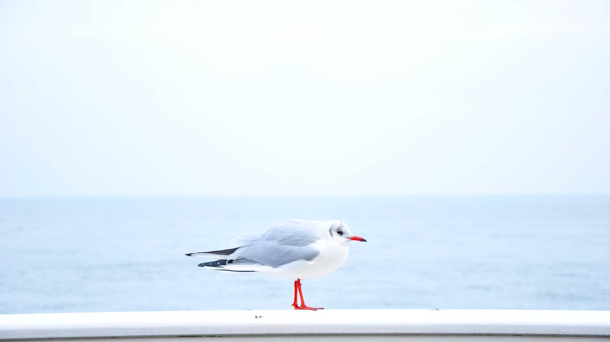

Community Programs
A summer camp built on service, an after-school programme about kindness and culture, and a free store that asks nobody why they came.
Three programmes
Two August weeks for children entering 4K through 5th grade. $60 a week, $10 off each additional child.
After school on Wednesdays for elementary students. $20 a month, snack included.
Two donation days and a free store day each summer, with Catch the Wave Shorewood and the Shorewood Waters Project.